SECCIÓN 4A
FRENOS HIDRÁULICOS
Precaución: Desconecte el cable negativo de la batería antes de desmontar o instalar cualquier unidad eléctrica o cuando exista la posibilidad de que una herramienta o equipo pueda entrar en contacto con bornes eléctricos expuestos. La desconexión de dicho cable ayudará a evitar lesiones personales y daños al vehículo. La llave de contacto debe estar en posición LOCK a menos que se indique lo contrario.
ESPECIFICACIONES
Especificaciones generales
| . | Motor 1.4/1.6/1.8/2.0 DOHC |
| Aplicación | Milímetros | Pulgadas |
| Tambores de freno: | . | . |
| Diámetro interior Diámetro máximo de rectificado Falta de redondez | 200.00 201.00 0.04 | 7.87 7.91 0.0016 |
| Discos de los frenos delanteros: | . | . |
| Espesor de descarte Excentricidad lateral (instalada) Diámetro del disco Espesor del disco (nuevo) Variación de espesor | 22.00 0.06 256 24.00 0.01 | 0.87 0.002 10.07 0.95 0.0004 |
| Discos de los frenos traseros: | . | . |
| Espesor de descarte Excentricidad lateral (instalada) Diámetro del disco Espesor del disco (nuevo) Variación de espesor | 8 0.08 258 10.4 0.01 | 0.31 0.003 10.15 0.40 0.0004 |
| Cilindro maestro: | . | . |
| Diámetro interior del alojamiento (nominal) Diámetro interior del alojamiento (máximo) | 22.22 22.29 | 0.875 0.878 |
| Pinza: | . | . |
| Diámetro mínimo del pistón (delantero) Diámetro mínimo del pistón (trasero) | 54.00 32 | 2.126 1.260 |
| Diámetro del cilindro de rueda: | . | . |
| Máximo Nominal | 20.7 20.64 | 0.815 0.812 |
Especificaciones de apriete de la sujeción
| Aplicación | N•m | Árbol de transmisión izquierdo | Articulación |
| Tornillo de purga | 8 | - | 71 |
| Tuberías de los frenos | 16 | 12 | - |
| Tuerca hexagonal para fijar el pedal del freno al soporte del pedal | 18 | 13 | - |
| Tornillo de fijación del manguito del freno de disco delantero a la pinza de freno | 40 | 30 | - |
| Tornillo para fijar el manguito del freno de disco trasero a la pinza de freno | 32 | 24 | - |
LOCALIZADOR DE COMPONENTES
Sistema de frenos (ABS)
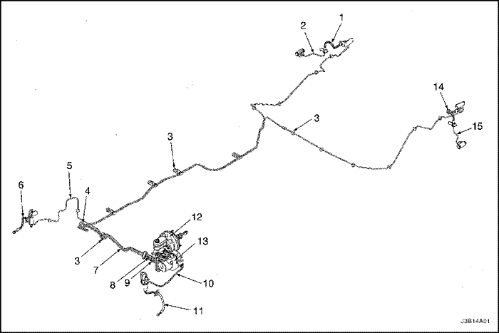


- Manguito de freno trasero dch.
- 3er tubo de freno trasero dch.
- Clip
- 2º tubo de freno trasero (A)
- 2º tubo de freno delantero
- Manguito de freno delantero dch.
- 2º tubo de freno trasero (B)
- 1er tubo de freno trasero (A)
- 1er tubo de freno trasero (B)
- Tubo de freno delantero
- Manguito del tubo de freno delantero izq.
- Conjunto del cilindro maestro/servofreno, conducción a izquierdas
- Modulador del ABS
- Manguito del tubo de freno trasero izq.
- 3er tubo de freno trasero izq.
Sistema de frenos (SIN ABS)
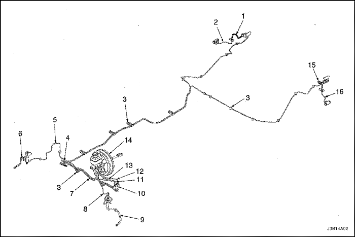
- Manguito de freno trasero dch.
- 3er tubo de freno trasero dch.
- Clip
- 2º tubo de freno trasero
- 2º tubo de freno delantero
- Manguito de freno delantero dch.
- 2º tubo de freno trasero
- Tubo de freno delantero
- Manguito del tubo de freno delantero izq.
- Conector
- 1er tubo de freno trasero (A)
- 1er tubo de freno delantero
- 1er tubo de freno trasero (B)
- Conjunto del cilindro maestro/servofreno, conducción a izquierdas
- Manguito del tubo de freno trasero izq.
- 3er tubo de freno trasero izq.
DIAGNÓSTICO
Pruebas del sistema de frenos
Los frenos deben probarse en una carretera seca, limpia, razonablemente lisa y nivelada. No se puede efectuar una comprobación real de los frenos si la carretera está húmeda, grasienta o cubierta de suciedad en las que los neumáticos no disponen de igual agarre. La prueba sería igualmente negativa si la carretera está tan bombeada que desnivele el peso tanto que las ruedas tiendan a rebotar.
Compruebe los frenos a velocidades diferentes del vehículo, con presiones fuertes y ligeras sobre el pedal. Eso sí, evite el bloqueo de los frenos y el patinaje de las ruedas. Unos frenos bloqueados y unas ruedas que patinan no sirven para indicar la eficacia de los frenos, ya que un frenazo brusco pero con las ruedas girando servirá para detener el vehículo en una distancia menor que con los frenos bloqueados. El coeficiente de rozamiento del neumático con la carretera es mayor en el caso de un frenazo brusco con las ruedas girando que con las ruedas patinando.
Debido a la alta capacidad de desaceleración, se puede sentir un pedal más firme a niveles de desaceleración más altos.
Existen tres condiciones externas principales que afectan al rendimiento de los frenos:
- Los neumáticos con un contacto y un agarre desigual a la carretera provocarán una frenada desigual. Los neumáticos deben inflarse a la misma presión y el dibujo de la banda de rodadura de los neumáticos izquierdos y derechos debe ser aproximadamente el mismo.
- Una carga desigualmente repartida puede afectar al rendimiento de los frenos, ya que las ruedas que soportan una mayor carga requerirán mayor potencia de frenada y, por tanto, un esfuerzo mayor que las otras.
- La desalineación de las ruedas, en particular aquellas condiciones provocadas por unos ángulos de avance y caída excesivos, hará que los frenos tiren hacia un lado.
Para comprobar las fugas de líquido de frenos, mantenga una presión constante sobre el pedal, con el motor funcionando a ralentí y la palanca del cambio en posición de punto muerto (N). Si el pedal sigue bajando con la presión constante, puede que haya una fuga en el sistema de frenos. Efectúe una comprobación visual para confirmar cualquier sospecha de fuga.
Compruebe el nivel del líquido en el cilindro maestro. Mientras que un ligero descenso en el nivel del depósito es una consecuencia del desgaste normal de los forros, un nivel anormalmente bajo indicará la existencia de una fuga en el sistema. Las fugas del sistema hidráulico pueden ser internas o externas. Para la comprobación del cilindro maestro, consulte el procedimiento que sigue a continuación. Igualmente, puede parecer que el sistema supera la prueba a pesar de seguir teniendo una fuga pequeña. Si el nivel del líquido es normal, compruebe la longitud de la varilla de empuje del servofreno. Si se descubre una longitud incorrecta de la varilla de empuje, ajuste o sustituya dicha varilla.
Compruebe el cilindro maestro mediante el uso del procedimiento siguiente:
- Compruebe la presencia de grietas en la fundición del cilindro maestro o de fugas alrededor del mismo. Basta una sola gota de líquido para indicar la existencia de una fuga. La existencia de humedad no debe considerarse como algo anormal.
- Compruebe la existencia de un agarrotamiento en el varillaje del pedal o una longitud incorrecta de la varilla de empuje. Si estas dos circunstancias fueran satisfactorias, desmonte el cilindro maestro y compruebe la existencia de un cilindro o un pistón alargados o unos retenes hinchados. Si se descubre que los retenes están hinchados, se debe sospechar que se está utilizando un líquido de frenos incorrecto o contaminado. Si se descubre la presencia de líquido de frenos contaminado, hay que desmontar y limpiar todos los componentes y sustituir todas las piezas de goma. Asimismo, se deben limpiar todos los tubos.
Un líquido de frenos incorrecto o la existencia de aceite mineral o agua en el mismo puede provocar que hierva dicho líquido de frenos o causar deterioro a los componentes de goma. Si las copas del pistón primario están hinchadas, ello es señal de que las piezas de goma se han deteriorado. Este deterioro puede hacerse evidente si hay retenes de pistón de cilindro de rueda hinchados en las ruedas de frenos de tambor.
Si el deterioro de la goma es evidente, desmonte todas las piezas del sistema hidráulico y lávelas con alcohol. Seque dichas piezas con aire comprimido para eliminar el alcohol del sistema antes de montarlas de nuevo. Sustituya todas las piezas de goma del sistema incluyendo los manguitos. Cuando trabaje en el mecanismo del freno, compruebe si hay líquido en los forros. Si se encuentra cantidad excesiva de líquido, sustituya los forros.
Si los retenes del pistón del cilindro maestro se encuentran en un estado satisfactorio, compruebe si hay fugas o un calor excesivo. Si no se dan estas circunstancias, extraiga el líquido de frenos, lave el cilindro maestro con líquido de frenos, vuelva a llenar el cilindro maestro y purgue el sistema. Consulte el apartado
"Purga manual de los frenos" o
"Purga de presión de los frenos" en esta sección.
Control de manguera de freno
Los manguitos de los frenos hidráulicos deben comprobarse dos veces al año, por lo menos. El conjunto de los manguitos de freno debe comprobarse en busca de daños provocados por maniobras bruscas, grietas, rozaduras en la cubierta exterior y la presencia de fugas o ampollas. Compruebe el recorrido y sujeción correcta de los manguitos de freno. Un manguito de freno que roce con un componente de la suspensión se desgastará y acabará fallando. Para una comprobación adecuada tal vez haya que emplear una luz y un espejo. Si observa la existencia de cualquiera de las situaciones anteriores en los manguitos de freno, ajústelos o sustitúyalos según sea necesario.
Funcionamiento de la luz de aviso
Este sistema de frenos emplea una luz de aviso de los frenos situada en el cuadro del panel de instrumentos. Cuando se gira la llave de contacto a la posición START, debe encenderse la luz de aviso de los FRENOS. Cuando la llave de contacto retorna a la posición RUN, debe apagarse.
La luz de los frenos se encenderá en las condiciones siguientes:
- Freno de estacionamiento aplicado. La luz debe estar encendida siempre que esté puesto el freno de estacionamiento y la llave de contacto esté en la posición ON.
- Nivel bajo del líquido de frenos. Un nivel bajo del líquido de frenos en el cilindro maestro dará lugar a que se encienda la luz de aviso de los frenos.
- Se desactiva el sistema EBD. La luz debería encenderse cuando haya un fallo de funcionamiento en el sistema EBD.
Diagnóstico de circuito de aviso de la luz de frenado
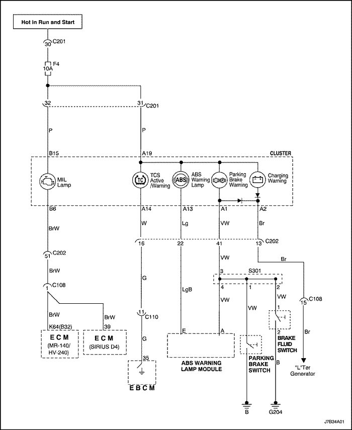
Descripción de la prueba
El (los) número(s) que sigue(n) a continuación corresponde(n) al (a los) paso(s) de la tabla de diagnóstico.
- En los vehículos equipados con ABS, al girar la llave de contacto a la posición ON, la luz de aviso de los frenos debería encenderse inicialmente y luego atenuarse. Esto se efectúa como comprobación de las bombillas. En los vehículos no equipados con ABS, la luz de aviso de los frenos debe iluminarse solamente si el nivel en el depósito del líquido de frenos es bajo o si el freno de estacionamiento está puesto.
- El interruptor del nivel del líquido de frenos está normalmente abierto. Si después de desconectar el interruptor la luz de aviso sigue apagada, el interruptor de nivel del líquido de frenos se ha quedado agarrotado en posición de cerrado.
- Si la luz de aviso de los frenos sigue encendida tras desconectar el interruptor del freno de estacionamiento, hay una derivación a masa en el cable del interruptor del freno de estacionamiento.
- Si las otras comprobaciones se han realizado correctamente y la luz de aviso de los frenos sigue apagada tras desconectar el conector J1 del módulo de control electrónico de los frenos (EBCM), el EBCM está defectuoso.
- Si la luz de aviso de los frenos no funciona al realizar alguna de las funciones, el fallo debe de estar en la alimentación de encendido al circuito.
- Este paso determina si el problema está en la alimentación de encendido al circuito o en el panel de instrumentos.
- La luz de aviso de los frenos debe iluminarse al derivar a masa el conector del freno de estacionamiento.
- Si la luz de aviso de los frenos está encendida tras conectar los terminales del interruptor de nivel del líquido de frenos con un puente, el interruptor está defectuoso.
Diagnóstico de circuito de aviso de la luz de frenado
| Paso | Medida | Valor(es) | Sí | No |
| 1 | Gire la llave de contacto a la posición ON. ¿Permanece siempre encendida la luz de aviso de los frenos? | - | Vaya al Paso 2 | Vaya al Paso 18 |
| 2 | Compruebe la luz de aviso del ABS. ¿La luz de aviso del ABS está también encendida? | - | Vaya al Paso 3 | Vaya al Paso 4 |
| 3 | Utilice un scanner para realizar el diagnóstico de los códigos de averías (DTC) y siga las instrucciones para cada DTC que encuentre. ¿Sigue encendida la luz? | - | Vaya al Paso 4 | Sistema OK |
| 4 | Suelte completamente el freno de estacionamiento. ¿Se apaga la luz? | - | Sistema OK | Vaya al Paso 5 |
| 5 | Compruebe el nivel del líquido de frenos. ¿Es correcto el nivel del líquido? | - | Vaya al Paso 7 | Vaya al Paso 6 |
| 6 | - Llene el depósito del líquido de frenos con líquido hidráulico limpio DOT 3 o equivalente.
- Sustituya el tapón del depósito de líquido.
¿Se enciende la luz? | - | Vaya al Paso 7 | Sistema OK |
| 7 | Desenchufe el conector del cableado del interruptor de nivel del líquido de frenos. ¿Se enciende la luz? | - | Vaya al Paso 9 | Vaya al Paso 8 |
| 8 | Sustituya el interruptor de nivel del líquido de frenos. ¿Se ha realizado la reparación? | - | Sistema OK | - |
| 9 | - Conecte el interruptor de nivel del líquido de frenos.
- Desconecte el interruptor del freno de estacionamiento.
¿Se enciende la luz? | - | Vaya al Paso 11 | Vaya al Paso 10 |
| 10 | Sustituya el interruptor del freno de estacionamiento. ¿Se ha realizado la reparación? | - | Sistema OK | - |
| 11 | Conecte el interruptor del freno de estacionamiento. ¿Está equipado el vehículo con ABS? | - | Vaya al Paso 12 | Vaya al Paso 14 |
| 12 | - Gire la llave de contacto a la posición OFF.
- Desenchufe el conector del módulo electrónico de control de frenos (EBCM).
- Gire la llave de contacto a la posición ON.
¿Se enciende la luz? | - | Vaya al Paso 14 | Vaya al Paso 13 |
| 13 | Sustituya el módulo de control electrónico de los frenos (EBCM). ¿Se ha realizado la reparación? | - | Sistema OK | - |
| 14 | - Gire la llave de contacto a la posición OFF.
- Enchufe el conector del EBCM.
- Compruebe si hay alguna derivación a masa en el cableado entre el terminal A19 del cuadro de instrumentos y el interruptor de nivel del líquido de frenos.
¿Se ha encontrado la avería? | - | Vaya al Paso 17 | Vaya al Paso 15 |
| 15 | Compruebe si hay alguna derivación a masa en el cableado entre el terminal A19 del cuadro de instrumentos y el interruptor del freno de estacionamiento. ¿Se ha encontrado la avería? | - | Vaya al Paso 17 | Vaya al Paso 16 |
| 16 | Compruebe si hay una derivación a masa en el cableado entre el terminal A19 del cuadro de instrumentos y el terminal A del módulo de la luz de aviso del ABS. ¿Se ha encontrado la avería? | - | Vaya al Paso 17 | Vaya al Paso 18 |
| 17 | Repare el cableado como sea necesario. ¿Se ha realizado la reparación? | - | Sistema OK | - |
| 18 | Compruebe la luz de aviso de los frenos tras efectuar cada una de las operaciones siguientes: - Ponga el freno de estacionamiento.
- Desmonte el tapón del depósito del líquido de frenos.
- En vehículos equipados con ABS, accione la luz de aviso usando un escáner.
¿Funciona la luz de aviso de los frenos en todas estas operaciones? | - | Sistema OK | Vaya al Paso 19 |
| 19 | Al realizar las operaciones del paso 18, la luz de aviso no funcionó. ¿Falló la luz de aviso de los frenos en todas las operaciones indicadas en el paso 18? | - | Vaya al Paso 20 | Vaya al Paso 27 |
| 20 | - Gire la llave de contacto a la posición OFF.
- Compruebe el fusible F4 del panel de defensa.
¿El fusible funciona correctamente? | - | Vaya al Paso 22 | Vaya al Paso 21 |
| 21 | Sustituya el fusible. ¿Se ha realizado la reparación? | - | Sistema OK | - |
| 22 | Compruebe la bombilla de la luz de aviso de los frenos. ¿Está bien la bombilla? | - | Vaya al Paso 24 | Vaya al Paso 23 |
| 23 | Sustituya la bombilla. ¿Se ha realizado la reparación? | - | Sistema OK | - |
| 24 | - Desenchufe el conector del cuadro de instrumentos.
- Gire la llave de contacto a la posición ON.
- Mida la tensión en el terminal A19 del conector del cuadro de instrumentos.
¿Está la tensión medida dentro del valor especificado? | 11-14 V | Vaya al Paso 25 | Vaya al Paso 26 |
| 25 | - Gire la llave de contacto a la posición OFF.
- Repare el circuito abierto en el cuadro de instrumentos.
¿Se ha realizado la reparación? | - | Sistema OK | - |
| 26 | - Gire la llave de contacto a la posición OFF.
- Repare la interrupción en el cableado entre el terminal A19 del conector del cuadro de instrumentos y el interruptor de contacto.
¿Se ha realizado la reparación? | - | Sistema OK | - |
| 27 | Aplique otra vez el freno de estacionamiento. ¿Se enciende la luz de aviso de los frenos con el freno de estacionamiento puesto? | - | Vaya al Paso 28 | Vaya al Paso 30 |
| 28 | Quite el tapón del depósito del líquido de frenos. ¿Se enciende la luz de aviso de los frenos con el tapón del depósito del líquido de frenos quitado? | - | Vaya al Paso 29 | Vaya al Paso 32 |
| 29 | Compruebe si hay alguna interrupción entre el terminal A1 del conector del cuadro de instrumentos y el terminal A del módulo de la luz de aviso del ABS. ¿Se ha encontrado la avería? | - | Vaya al Paso 17 | Vaya al Paso 13 |
| 30 | - Gire la llave de contacto a la posición ON.
- Desconecte el interruptor del freno de estacionamiento.
- Conecte un puente entre el terminal del conector del interruptor del freno de estacionamiento y masa.
¿Se enciende la luz? | - | Vaya al Paso 10 | Vaya al Paso 31 |
| 31 | - Gire la llave de contacto a la posición OFF.
- Repare la interrupción en el cable entre el terminal A1 del conector del cuadro de instrumentos y el terminal del conector del interruptor del freno de estacionamiento.
- ¿Se ha realizado la reparación?
¿Se ha realizado la reparación? | - | Sistema OK | - |
| 32 | - Desconecte el interruptor de nivel del líquido de frenos.
- Gire la llave de contacto a la posición ON.
- Conecte con un puente los terminales del conector del interruptor de nivel del líquido de frenos.
¿Se enciende la luz? | - | Vaya al Paso 8 | Vaya al Paso 33 |
| 33 | - Gire la llave de contacto a la posición OFF.
- Conecte una lámpara de pruebas entre el positivo de la batería y el terminal del cable violeta/blanco del interruptor de nivel del líquido de frenos.
¿Se enciende la lámpara de pruebas? | - | Vaya al Paso 34 | Vaya al Paso 35 |
| 34 | Repare el circuito abierto en el cableado entre masa y el interruptor de nivel del líquido de frenos. ¿Se ha realizado la reparación? | - | Sistema OK | - |
| 35 | Repare la interrupción en el cableado entre el terminal A1 del conector del cuadro de instrumentos y el interruptor de nivel del líquido de frenos. ¿Se ha realizado la reparación? | - | Sistema OK | - |
MANTENIMIENTO Y REPARACIÓN
servicio con vehículo en marcha
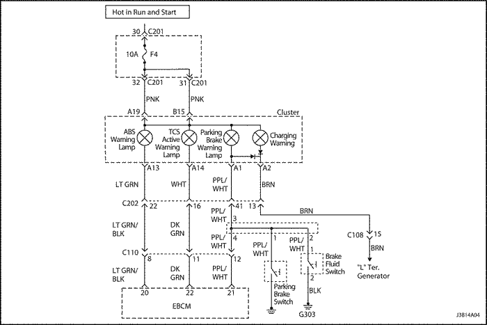
Purga manual de frenos
(Indicado para conducción a izquierdas, conducción a derechas similar)
- Elimine la reserva del servofreno pisando el pedal varias veces, con el motor apagado, hasta que se haya hecho en éste el vacío completamente.
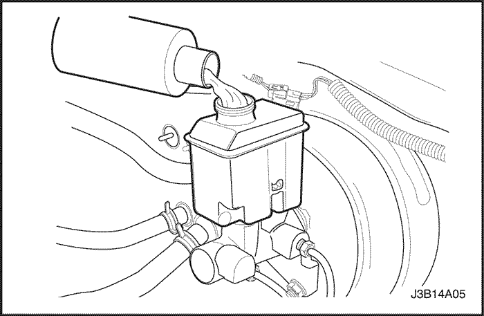
Importante: Si se sabe o se sospecha que existe aire en el cilindro maestro, purgue este aire antes de purgar cualquier cilindro de rueda o pinza de freno.
- Llene el depósito del cilindro maestro con líquido de frenos. Mantenga el depósito del cilindro maestro, al menos, medio lleno durante la operación de purga.
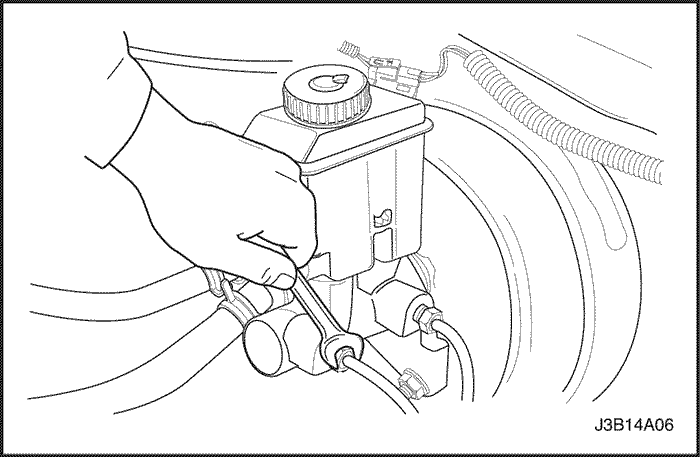
- Desconecte la(s) tubería(s) de freno delantero del cilindro maestro.
- Deje que el líquido de frenos llene el cilindro maestro antes de que empiece a salir por el orificio del conector del tubo delantero.
- Conecte la(s) tubería(s) de freno delantero al cilindro maestro.
Apretar
Apriete las tuberías de freno hasta 16 N• m (12 lb-pie).
- Pise el pedal de freno lentamente y manténgalo pisado.
- Afloje la tubería de freno delantero en el cilindro maestro para purgar el aire del cilindro.
- Apriete la tubería de freno (igual que en el paso 5) y, a continuación, suelte el pedal de freno lentamente. Espere 15 segundos antes de continuar con el paso siguiente.
- Repita la secuencia, incluyendo los 15 segundos de espera, hasta haber eliminado todo el aire de la camisa del cilindro maestro.
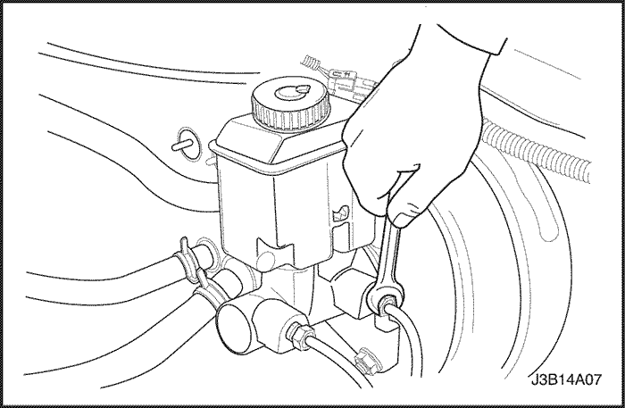
Aviso: Se debe tener mucho cuidado de evitar que el líquido de frenos entre en contacto con cualquier superficie pintada para que no se dañe la pintura.
- Después de haber eliminado todo el aire de la conexión o conexiones delanteras, purgue la conexión o conexiones traseras del cilindro maestro de la misma forma que se ha hecho con la(s) delantera(s).
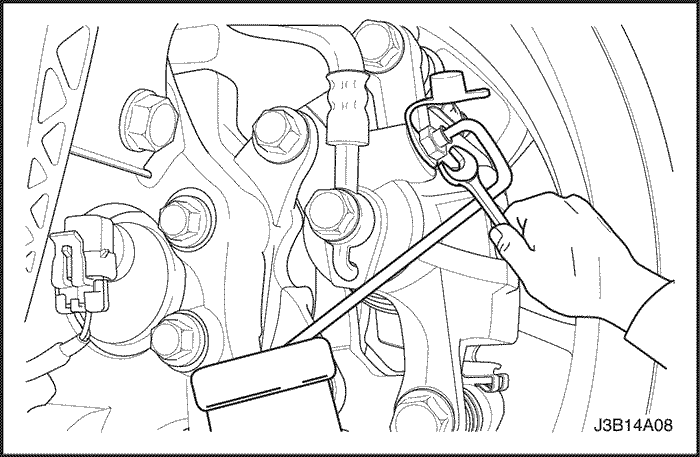
Importante: En vehículos sin sistema antibloqueo de frenos, la secuencia de purga es la siguiente: trasero derecho, trasero izquierdo, delantero izquierdo y delantero derecho. En vehículos con ABS, consulte la Sección 4F, Sistema antibloqueo de frenos para el procedimiento y secuencia de purga correctos. - Fije un tubo transparente a la válvula de purga. Deje que cuelgue el tubo y se sumerja en el líquido de frenos en un recipiente también transparente.
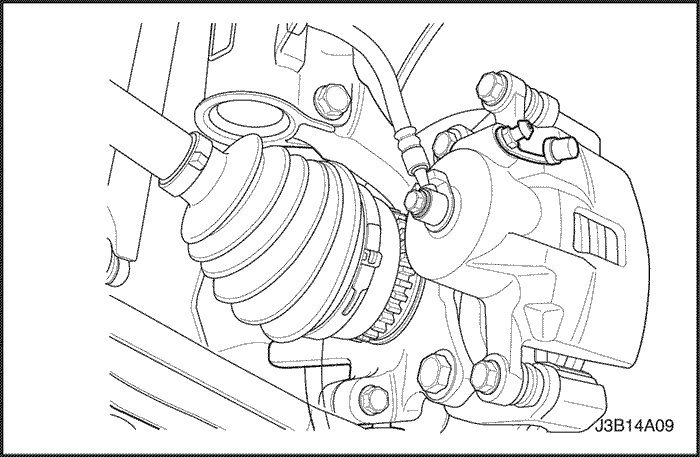
- Pise el pedal de freno lentamente y manténgalo pisado.
- Desmonte el guardapolvo de la válvula de purga y afloje dicha válvula para purgar el aire del cilindro.
- Apriete el tornillo de purga.
Apretar
Apriete el tornillo de purga hasta 8 N•m (71 lb-pulg.).
- Suelte lentamente el pedal de freno. Espere 15 segundos antes de continuar con el paso siguiente.
Importante: Un bombeo rápido del pedal de freno empujará el pistón secundario del cilindro maestro hacia la parte inferior de la camisa, dificultando en extremo la purga del sistema.
- Repita la secuencia, incluyendo los 15 segundos de espera, hasta que se haya eliminado todo el aire. Puede que haya que repetir la secuencia 10 veces o más para extraer todo el aire.
- Monte los tapones delanteros de purga.
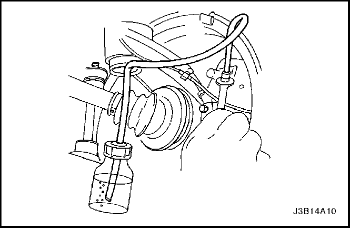
- Purgue los frenos delanteros siguiendo la secuencia apropiada, comenzando por el paso 12.
- Compruebe si hay una cierta esponjosidad en el pedal de freno. Repita el proceso entero de purga hasta corregir este efecto.
- Sustituya el guardapolvo de la válvula de purga.
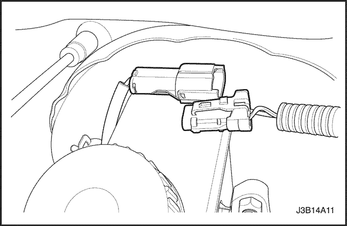
Purga de presión de frenos
Aviso: El equipo de purga de presión debe ser de los de diafragma. Debe disponer de un diafragma de goma entre el suministro de aire y el líquido de frenos para impedir que entre aire, humedad, aceite u otros contaminantes en el sistema hidráulico. La contaminación puede dar lugar a un deterioro de los componentes del sistema de frenos y una pérdida de frenado.
- Desenchufe el conector eléctrico del cilindro maestro.
- Quite el tapón del depósito del cilindro maestro.
- Conecte el purgador con el adaptador al depósito del cilindro maestro.
- En vehículos con sistema antibloqueo de frenos (ABS), localice y desmonte las válvulas de purga del modulador hidráulico. Consulte la Sección 4F, Sistema antibloqueo de frenos.
- Cargue la bola de purga entre 140 y 172 kPa (20 y 25 lbs/pulg2).
- Conecte la tubería al adaptador. Abra la válvula de la tubería.
- Levante y apoye el vehículo adecuadamente.
Importante: La secuencia de purga es la siguiente: trasera derecha, delantera izquierda, trasera izquierda y delantera derecha.
- Fije el manguito de freno a la válvula de purga. Sumerja el extremo contrario del manguito en un recipiente limpio lleno parcialmente de líquido de frenos.
- Abra la válvula de purga entre un medio y tres cuartos de vuelta y deje que el líquido circule hasta que no se vea aire en el mismo.
Aviso: Tras la operación de purga, el depósito del líquido puede estar presurizado. Al tiempo que desconecta el manguito de purga o el tapón del adaptador no roscado, cubra el tapón y la conexión con una toalla de taller para proteger las superficies pintadas del líquido de frenos.
- Compruebe si hay una cierta esponjosidad en el pedal de freno. Repita el proceso entero de purga hasta corregir este efecto.
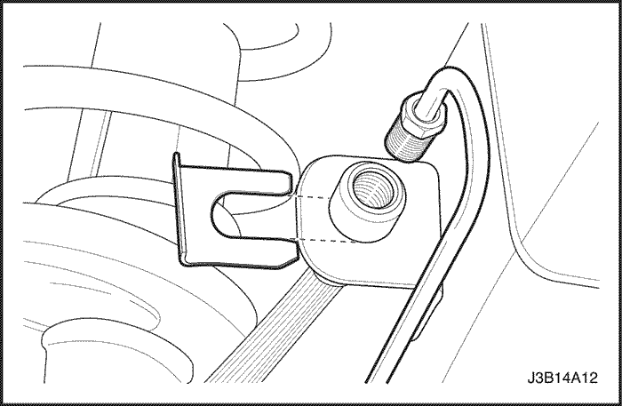
Manguera de freno trasero
Procedimiento de desmontaje
- Levante y apoye el vehículo adecuadamente.
- Desmonte el retén del manguito de freno.
- Desconecte la tubería del manguito del freno de disco.
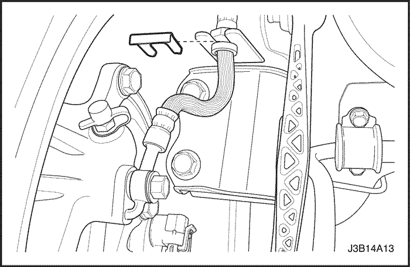
- Desmonte el retén del manguito del freno de disco trasero y el manguito de freno del soporte del eje de la mangueta.
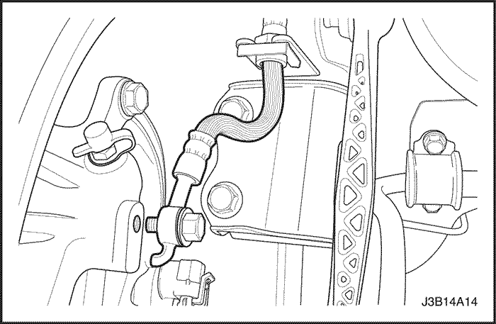
- Retire el manguito del freno de disco trasero de la pinza.
procedimiento de montaje
- Conecte la tubería de freno al manguito de freno.
Apretar
Apriete la tubería de freno hasta 16 N• m (12 lb-pie).
- Monte el retén en el soporte del manguito de freno trasero, en el paso de rueda.
- Instale el manguito del freno de disco trasero en la pinza.
Apretar
Apriete el tornillo para fijar el manguito del freno de disco trasero a la pinza de freno a la pinza hasta 32 N•m (24 lb-pie).
- Monte el manguito del freno de disco trasero y el retén en el soporte del eje de la mangueta.
- Baje el vehículo.
- Purgue el sistema de frenos. Consulte el apartado "Purga manual de los frenos" de esta sección.
- Compruebe la existencia de fugas en el sistema de frenos.
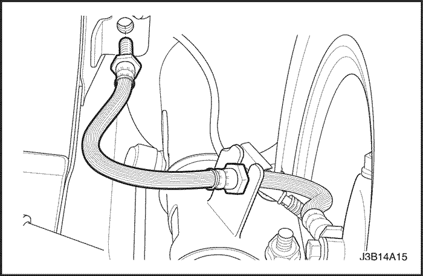
Manguera de freno delantero
Procedimiento de desmontaje
- Levante y apoye el vehículo adecuadamente.
- Quite el retén.
- Desconecte la tubería de freno del manguito de freno, en el soporte del paso de rueda, a cada lado del vehículo.
- Desconecte el manguito de freno del soporte en forma de "C", en el eje de la mangueta.
- Quite el tornillo de la pinza de freno.
- Retire las arandelas de junta y el manguito del freno de disco.
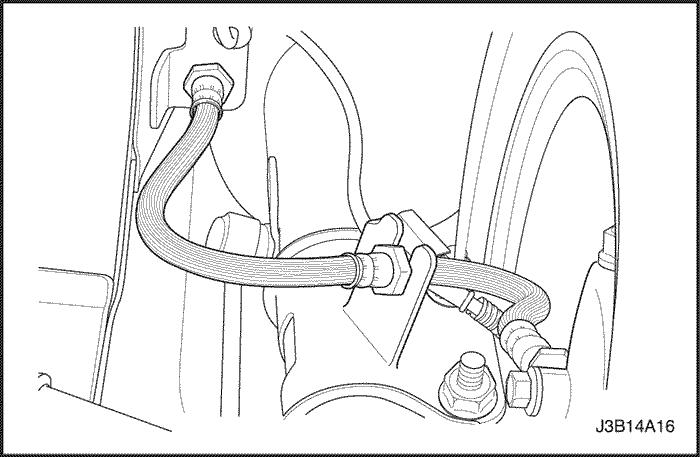
procedimiento de montaje
- Conecte el nuevo manguito del freno de disco a la pinza con arandelas de junta nuevas y el tornillo.
Apretar
Apriete el tornillo de fijación del manguito del freno de disco delantero a la pinza de freno hasta 40 N•m (30 lb-pie).
- Deslice el manguito de freno en el soporte en forma de "C" del eje de la mangueta.
- Conecte la tubería de freno al manguito de freno, en el soporte del paso de rueda, a cada lado del vehículo.
Apretar
Apriete la tubería de freno hasta 16 N• m (12 lb-pie).
- Baje el vehículo.
- Purgue el sistema de frenos. Consulte el apartado "Purga manual de los frenos" de esta sección.
- Compruebe la existencia de fugas en el sistema de frenos.
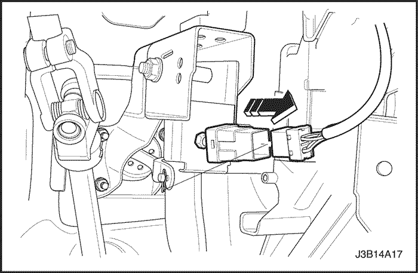
Conmutador de luz de frenado
(Indicado para conducción a izquierdas, conducción a derechas similar)
Procedimiento de desmontaje
- Desconecte el cable negativo de la batería.
- Desconecte el interruptor de las luces de freno del conector.
- Gire el interruptor. Desmonte el interruptor del soporte del pedal del freno.
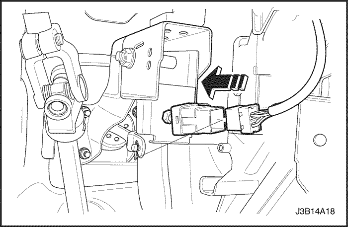
procedimiento de montaje
- Coloque el interruptor de las luces de freno en el conector.
- Gire el interruptor de las luces de freno en el taladro del soporte del pedal del freno.
- Pise el pedal del freno y tire del émbolo del interruptor al máximo para ajustar el interruptor.
- Suelte el émbolo y tire hacia arriba del pedal.
- Conecte el cable negativo de la batería.
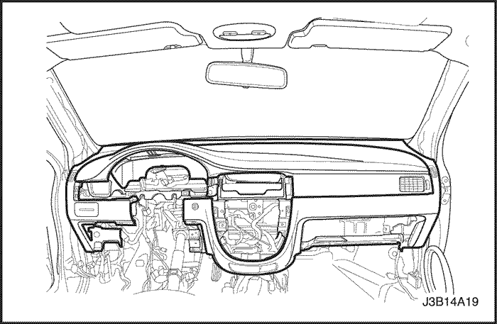
Pedal de freno
(Indicado para conducción a izquierdas, conducción a derechas similar)
Procedimiento de desmontaje
- Desmonte el panel de instrumentos. Consulte la Sección 9E, Instrumentación/información para el conductor.
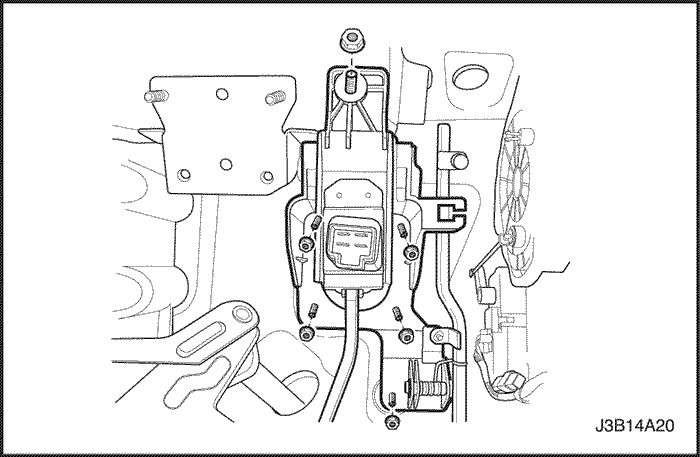
- Quite las tuercas del anclaje.
- Desmonte el pedal del freno.
procedimiento de montaje
- Monte el anclaje con sus tuercas.
Apretar
Apriete el anclaje con las tuercas hasta 22 N•m (16 lb-pie).
- Monte el pedal del freno.
- Monte el panel de instrumentos. Consulte la Sección 9E, Instrumentación/información para el conductor.
DESCRIPCIÓN GENERAL Y FUNCIONAMIENTO DEL SISTEMA
Funcionamiento de la luz de aviso
Este sistema de frenos emplea una luz de aviso de los frenos situada en el cuadro del panel de instrumentos. Cuando la llave de contacto esté en la posición START, la luz de aviso de los frenos debería encenderse. Debe apagarse cuando la llave de contacto vuelva a estar en la posición ON.
La luz de aviso de los frenos se encenderá en los casos siguientes.
- La luz debe estar encendida siempre que esté aplicado el freno de estacionamiento y la llave de contacto esté en la posición ON.
- Un nivel bajo del líquido de frenos en el cilindro maestro dará lugar a que se encienda la luz de aviso de los frenos.